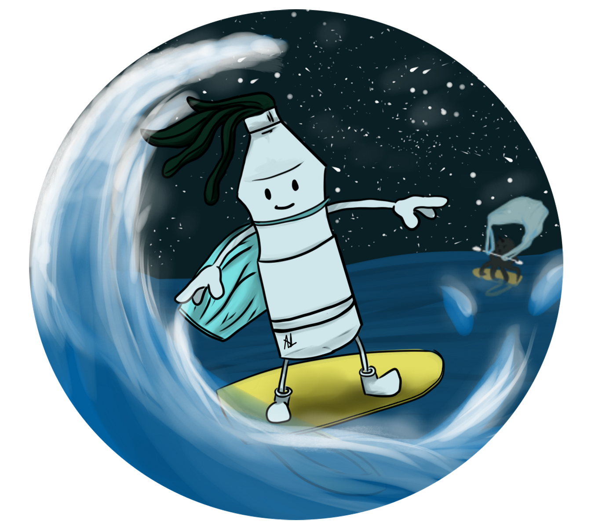

Surfrider Foundation Europe est une association loi 1901 qui agit depuis 30 ans pour la préservation des océans et de la santé de ses usagers. Nous travaillons sur 3 enjeux : les déchets, la qualité des eaux littorales et le changement climatique. L’association est née à Biarritz en 1990 suite à la mobilisation de surfeurs en colère. Leur terrain de jeu était mis en danger et leur santé menacée. Aujourd’hui, l’ADN et la culture surf transpirent toujours au sein des membres fondateurs de l’organisation. La cause, elle, a dépassé cette « tribu » locale du Sud Ouest de la France pour rassembler des citoyens dans toute l’Europe.
A travers cette application, nous visons en priorité les surfeurs et surfeuses régulier·e·s, qui pratiquent ce sport plusieurs fois par mois tout au long de l’année. Les nouvelles technologies sont omniprésentes dans le quotidien de ces pratiquant·e·s. Elles servent quasi exclusivement à préparer une session de surf et estimer quand et où les vagues seront les meilleures. La qualité des vagues dépend de plusieurs critères : houle, marée, vent, fond marin... Les surfeur·e·s y accordent beaucoup d’importance et les consultent régulièrement. Pour ne pas multiplier les outils, l’application proposée devra permettre l’agrégation de ce type d’informations. Au contraire, il n’y a pas d’usage similaire pour l’après-session, comme il en existe pour le running ou le vélo avec un suivi précis de la pratique.
